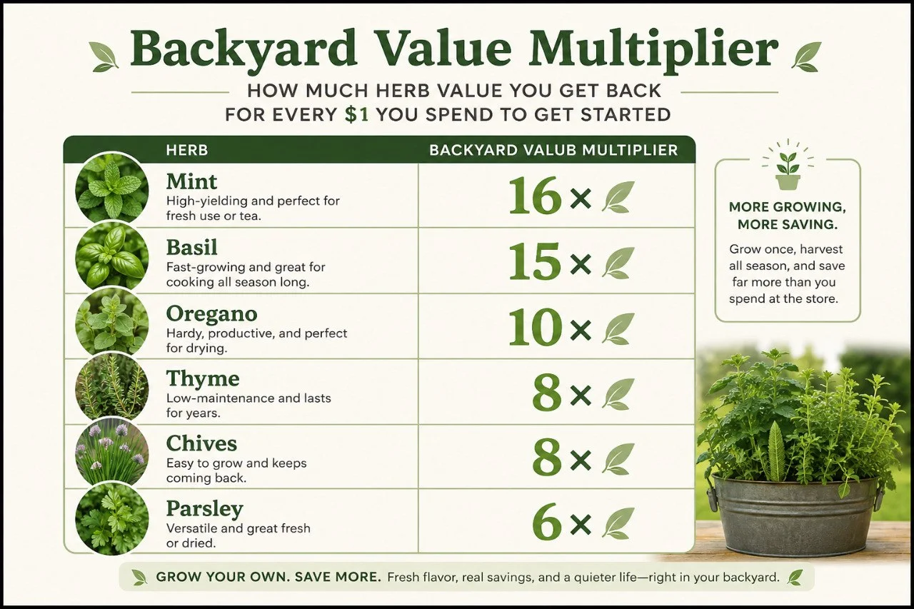

The Herbs That Quietly Save You the Most Money
If you want a backyard crop that can help the garden, help the kitchen, and maybe even become something extra later, herbs are hard to beat. They fit small spaces, do more than one job, and keep paying you back in quiet little ways all season long.

Existing QBL illustrationBest herbs to start with
- basil for fast payoff
- parsley for everyday use
- oregano and thyme for drying
- chives for easy repeat harvests
- mint for tea, in a pot
My six best-value herb picks
1. Basil
- grows fast in warm weather
- best when clipped regularly
- loses value fast once it flowers or wilts
- usually better frozen than dried
- one of the easiest herbs to use or sell quickly
2. Parsley
- one of the easiest herbs to actually use often
- good in soups, eggs, potatoes, and salads
- gives repeat harvests without much drama
- tucks into beds and containers easily
- more valuable than people think because it gets used
3. Oregano
- one of the easiest herbs to dry well
- keeps paying you back after harvest day
- good choice if you want pantry value
- usually worth growing a little extra
- strong long-season herb once established
4. Thyme
- small plant, strong long-term value
- great for small beds, borders, and containers
- dries well and stores well
- does not need much to earn its space
- good quiet workhorse herb for repeat use
5. Chives
- easy to snip and use the same day
- great for edges and little empty spots
- repeat harvest herb with low fuss
- beginner-friendly and tidy looking
- more useful than flashy
6. Mint
- best kept in a pot unless you want it spreading
- great for tea and summer drinks
- can produce a lot from one plant
- one of the strongest repeat-harvest herbs
- quietly expensive to buy over and over at the store
If I wanted the simplest starter herb setup
- one pot of basil
- one pot or patch of parsley
- one thyme plant
- one oregano plant
- one clump of chives
That setup covers fast fresh use, drying herbs, repeat snipping, and real kitchen value without turning herbs into a whole separate project.
Keep it simple
- grow the herbs you actually use
- start with 3 to 5, not 15
- mint usually belongs in a pot
- grow a little extra if you want more value later
🌿 Enjoying the Herb Hub?
Get occasional updates when new herb guides, backyard ideas, projects, and stories are added around the yard.
No spam. Just the next good thing when it’s ready.
Keep reading
Bottom line
If you want one of the warmest, easiest, most practical ways for a backyard to give something back, start with herbs. They can help the garden, help the kitchen, and sometimes turn into a little extra value beyond that. A few herbs earning their space twice is one of the smartest small-space moves you can make.